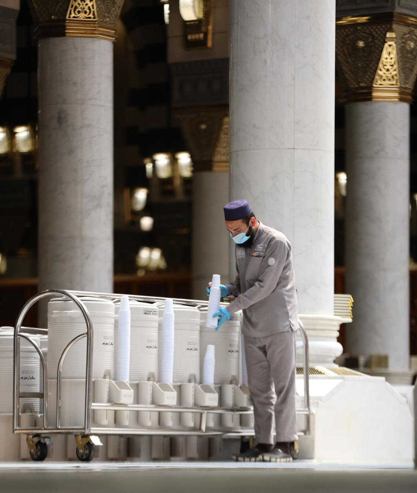
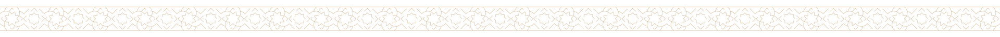
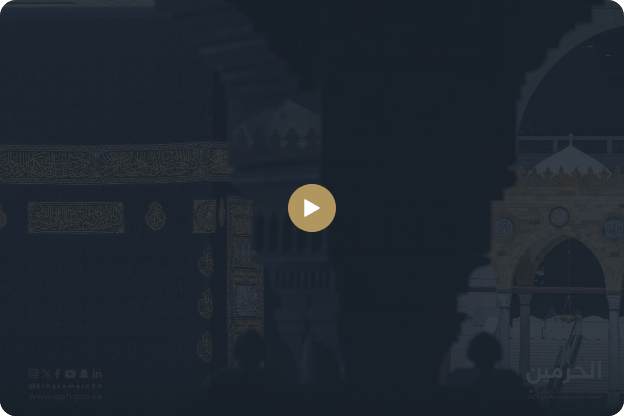
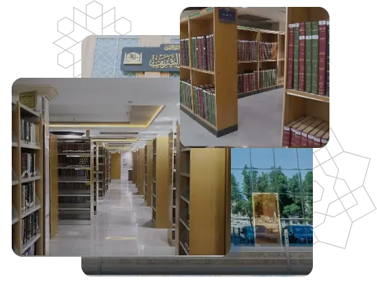

الروضة الشريفة هي المكان المبارك الواقع بين بيت النبي صلى الله عليه وسلم، بيت السيدة عائشة رضي الله عنها، وبين المنبر الشريف. قال النبي صلى الله عليه وسلم: «ما بين بيتي ومنبري روضة من رياض الجنة».
اقرأ المزيد
جهود نُسجت من المحبة وخُلدت بالعطاء

مكتبة المسجد النبوي، معلم بارز في قلب المدينة المنورة، يضم بين جدرانه إرثًا ثقافيًا عظيمًا ويسعى لتقديمه بأحدث الوسائل لإثراء تجربة الزوار.

اخر الأرقام والاحصاءات في المسجد النبوي